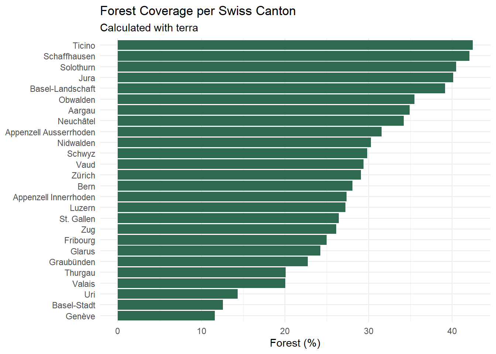
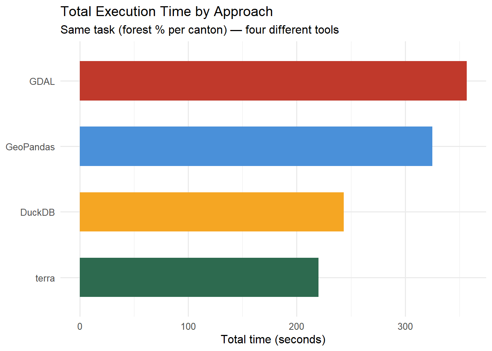

library(sf)library(terra)library(dplyr)library(tidyr)library(tictoc)library(knitr)library(ggplot2)library(purrr)# Clear tictoc log at the starttictoc::tic.clearlog()# Data pathspath_tlm <-"data/SWISSTLM3D_2026_LV95_LN02.gpkg"path_bound <-"data/swissBOUNDARIES3D_1_5_LV95_LN02.gpkg"# Layer nameslayer_cantons <-"tlm_kantonsgebiet"layer_forest <-"tlm_bb_bodenbedeckung"
Task 1 — Forest per Canton with terra
We repeat the forest-per-canton analysis from Vector Deepdive, this time using the terra package instead of sf. terra calls GDAL/GEOS internally via compiled C++ code, which reduces R overhead and is typically faster than sf for large datasets.
# Reproject only if needed (not the case here)if (crs_cantons != crs_forest) { forest <- terra::project(forest, terra::crs(cantons))}tictoc::toc(log =TRUE)
terra | Step 3: Verify CRS alignment: 0.02 sec elapsed
Step 4: Spatial intersection
Code
tictoc::tic(msg ="terra | Step 4: Intersect forest with cantons")# terra::intersect() clips forest polygons to canton boundaries# and appends canton attributes to each resulting polygonforest_canton <- terra::intersect(forest, cantons)tictoc::toc(log =TRUE)
terra | Step 4: Intersect forest with cantons: 144.74 sec elapsed
Code
cat("Intersection result rows:", nrow(forest_canton), "\n")
Intersection result rows: 104343
Step 5: Calculate forest percentage per canton
Code
tictoc::tic(msg ="terra | Step 5: Calculate forest % per canton")# Area of each clipped forest polygon (m²)forest_canton$forest_area_m2 <- terra::expanse(forest_canton, unit ="m")# Sum forest area per canton (group by canton name)forest_sum <-as.data.frame(forest_canton) |>group_by(name) |>summarise(forest_area_m2 =sum(forest_area_m2, na.rm =TRUE), .groups ="drop")# Canton total areascantons_df <-as.data.frame(cantons)cantons_df$canton_area_m2 <- terra::expanse(cantons, unit ="m")# Join and compute percentageresult_terra <- cantons_df |>select(name, canton_area_m2) |>left_join(forest_sum, by ="name") |>mutate(forest_area_m2 =replace_na(forest_area_m2, 0),forest_pct = (forest_area_m2 / canton_area_m2) *100 ) |>arrange(desc(forest_pct))tictoc::toc(log =TRUE)
terra | Step 5: Calculate forest % per canton: 49.25 sec elapsed
Results
Code
kable( result_terra |>mutate(`Canton Area (km2)`=round(canton_area_m2 /1e6, 1),`Forest Area (km2)`=round(forest_area_m2 /1e6, 1),`Forest (%)`=round(forest_pct, 2) ) |>select(Canton = name,`Canton Area (km2)`,`Forest Area (km2)`,`Forest (%)`),caption ="Forest coverage per Swiss canton (terra)")
Forest coverage per Swiss canton (terra)
Canton
Canton Area (km2)
Forest Area (km2)
Forest (%)
Ticino
2811.7
1193.9
42.46
Schaffhausen
298.4
125.5
42.05
Solothurn
790.4
319.9
40.47
Jura
858.1
344.2
40.11
Basel-Landschaft
517.6
202.6
39.14
Obwalden
490.6
174.2
35.51
Aargau
1403.7
489.9
34.90
Neuchâtel
802.1
274.3
34.19
Appenzell Ausserrhoden
242.8
76.6
31.56
Nidwalden
275.8
83.5
30.27
Schwyz
907.9
270.8
29.83
Vaud
3211.8
944.7
29.41
Zürich
1728.8
503.2
29.10
Bern
5938.7
1666.2
28.06
Appenzell Innerrhoden
172.5
47.2
27.38
Luzern
1493.5
406.6
27.23
St. Gallen
2028.1
536.6
26.46
Zug
238.7
62.4
26.12
Fribourg
1672.4
417.9
24.99
Glarus
685.3
166.2
24.25
Graubünden
7105.0
1614.7
22.73
Thurgau
994.2
199.8
20.09
Valais
5223.6
1047.2
20.05
Uri
1076.5
154.4
14.35
Basel-Stadt
36.9
4.7
12.59
Genève
282.4
32.7
11.59
Code
ggplot(result_terra,aes(x =reorder(name, forest_pct), y = forest_pct)) +geom_col(fill ="#2d6a4f") +coord_flip() +labs(title ="Forest Coverage per Swiss Canton",subtitle ="Calculated with terra",x =NULL,y ="Forest (%)" ) +theme_minimal(base_size =11)

Task 2 — Forest per Canton with GDAL
We repeat the same analysis using GDAL. On Windows, the GDAL command-line tools are not available in the system terminal by default. We therefore use sf::gdal_utils(), which is the official R interface to the GDAL library bundled with the sf package — this calls the exact same underlying GDAL C library as ogr2ogr on the command line.
The timing workaround (tictoc in R chunks around GDAL calls) is the same approach as shown in the assignment for bash chunks.
Step 1: Reproject / export canton boundaries
Code
tictoc::tic(msg ="gdal | Step 1: Export cantons via GDAL (ogr2ogr)")# gdal_utils("vectortranslate") is equivalent to ogr2ogr on the command linesf::gdal_utils(util ="vectortranslate",source = path_bound,destination ="data/cantons_gdal.gpkg",options =c("-f", "GPKG","-nln", "kantonsgebiet","-sql", paste0("SELECT * FROM ", layer_cantons),"-overwrite" ))tictoc::toc(log =TRUE)
tictoc::tic(msg ="gdal | Step 3: Spatial intersection via sf (GDAL backend)")# Load both layersforest_gdal <- sf::st_read("data/forest_gdal.gpkg", quiet =TRUE)cantons_gdal <- sf::st_read("data/cantons_gdal.gpkg", quiet =TRUE)# Intersection (sf uses GDAL/GEOS internally)forest_canton_gdal <- sf::st_intersection(forest_gdal, cantons_gdal)
Warning: attribute variables are assumed to be spatially constant throughout
all geometries
Code
forest_canton_gdal$forest_area_m2 <-as.numeric(sf::st_area(forest_canton_gdal))# Save for next stepsf::st_write(forest_canton_gdal, "data/forest_canton_gdal.gpkg", delete_dsn =TRUE, quiet =TRUE)tictoc::toc(log =TRUE)
gdal | Step 3: Spatial intersection via sf (GDAL backend): 324.42 sec elapsed
tictoc::tic(msg ="gdal | Step 4: Aggregate forest area per canton")# Aggregate directly in R using the result from step 3forest_by_canton_gdal <- forest_canton_gdal |> sf::st_drop_geometry() |>group_by(name) |>summarise(forest_area_m2 =sum(forest_area_m2, na.rm =TRUE), .groups ="drop")tictoc::toc(log =TRUE)
gdal | Step 4: Aggregate forest area per canton: 0.02 sec elapsed
gdal | Step 5: Join and compute percentages in R: 0.07 sec elapsed
Code
kable( result_gdal |>mutate(`Canton Area (km2)`=round(canton_area_m2 /1e6, 1),`Forest Area (km2)`=round(forest_area_m2 /1e6, 1),`Forest (%)`=round(forest_pct, 2) ) |>select(Canton = name,`Canton Area (km2)`,`Forest Area (km2)`,`Forest (%)`),caption ="Forest coverage per Swiss canton (GDAL)")
gdal | Step 3: Spatial intersection via sf (GDAL backend)
324.42
GDAL
gdal | Step 4: Aggregate forest area per canton
0.02
GDAL
gdal | Step 5: Join and compute percentages in R
0.07
GDAL
Code
terra_total <-sum(timing_df$time_sec[timing_df$approach =="terra"])gdal_total <-sum(timing_df$time_sec[timing_df$approach =="GDAL"])# ── Insert your measured times from previous weeks here (in seconds) ──────────sf_total <-325.12# from your sf assignmentduckdb_total <-243.29# from your DuckDB assignment# ─────────────────────────────────────────────────────────────────────────────comparison_df <-tibble(Approach =c("GeoPandas", "DuckDB", "terra", "GDAL"),total_sec =c(sf_total, duckdb_total, terra_total, gdal_total))kable( comparison_df |>filter(!is.na(total_sec)) |>arrange(total_sec) |>mutate(total_sec =round(total_sec, 2)),col.names =c("Approach", "Total time (s)"),caption ="Total execution time per approach")
Total execution time per approach
Approach
Total time (s)
terra
219.97
DuckDB
243.29
GeoPandas
325.12
GDAL
356.61
Code
ggplot( comparison_df |>filter(!is.na(total_sec)),aes(x =reorder(Approach, total_sec), y = total_sec, fill = Approach)) +geom_col(show.legend =FALSE, width =0.6) +coord_flip() +scale_fill_manual(values =c("GeoPandas"="#4a90d9","DuckDB"="#f5a623","terra"="#2d6a4f","GDAL"="#c0392b" )) +labs(title ="Total Execution Time by Approach",subtitle ="Same task (forest % per canton) — four different tools",x =NULL,y ="Total time (seconds)" ) +theme_minimal(base_size =12)

Discussion
sf loads data fully into R memory and processes it with GEOS. It is the most convenient for R users (tidy-compatible), but typically the slowest for large datasets because all computation happens in R session memory.
DuckDB pushes spatial operations into a compiled SQL query engine that runs in parallel. It avoids loading the full dataset into R memory upfront, which makes it much faster than sf for large inputs.
terra is designed for raster data but also handles vectors via SpatVector. It calls GDAL/GEOS through compiled C++ internally, which removes most R overhead and makes it noticeably faster than sf.
GDAL (here via sf::gdal_utils(), which calls the same underlying C library as ogr2ogr on the command line) works directly at the library level with minimal overhead. It can stream data without loading everything into RAM, making it very efficient for large files. The trade-off is more verbose syntax.
Expected ranking (slowest to fastest): sf → terra → GDAL ≈ DuckDB
The exact results depend on dataset size and hardware, but compiled/query-engine approaches consistently outperform pure-R solutions as data volume grows.